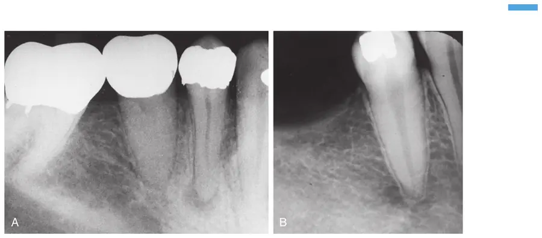

نسخه استخراجشده؛ ترجمه یا تأیید علمی انجام نشده است. وضعیت: captured
مثل فوریتهای پزشکی، بهترین راه مدیریت عوارض جراحی این است که نگذاری اتفاق بیفتند. پیشگیری در حالت ایدهآل با ارزیابی کامل پیش از عمل و یک طرح درمان جامع، و سپس اجرای دقیق عمل جراحی به دست میآید. تنها وقتی اینها بهطور روتین انجام شوند، جراح میتواند انتظار عوارض کم داشته باشد.

ولی حتی با چنین برنامهریزی و تکنیک عالی، عوارض همچنان گاهی رخ میدهند. در موقعیتهایی که دندانپزشک با دقت برنامهریزی کرده، عارضه اغلب قابل پیشبینی است و میتواند بهصورت روتین مدیریت شود.
یک نمونهی روشن از این پیشبینی: در کشیدن پرمولر اول ماگزیلا با ریشههای بلند و نازک، خارج کردن ریشهی باکال بهمراتب آسانتر از ریشهی پالاتال است. پس جراح عمداً نیروی بیشتری به سمت ریشهی باکال میآورد تا اگر ریشهای بشکند، محتملتر باشد که ریشهی باکال باشد نه پالاتال — چون در بیشتر موارد بیرون آوردن ریشهی باکال سرراستتر است.
گام ۱ — حدود توانایی خودت. دندانپزشکان باید جراحیای انجام دهند که در محدودهی تواناییشان باشد، پس باید پیش از تصمیم به انجام یک کار جراحی مشخص، آموزش و تواناییهای خود را با دقت ارزیابی کنند. برای مثال، نامناسب است که دندانپزشکی با تجربهی محدود در مدیریت مولر سوم نهفته، کشیدن جراحی یک دندان جاسازیشده را بر عهده بگیرد — چون بروز عوارض حین و پس از عمل در این وضعیت بهطور غیرقابل قبولی بالاست.
و یک هشدار روانشناختی: جراحان باید مراقب خوشبینی بیجا باشند، که میتواند قضاوتشان را مخدوش کند و مانع ارائهی بهترین مراقبت ممکن شود. ارجاع به متخصص گزینهای است که هرگاه جراحی برنامهریزیشده فراتر از سطح مهارت خودِ دندانپزشک باشد، باید به کار گرفته شود. در بعضی موقعیتها این نهتنها یک تعهد اخلاقی، بلکه مدیریت خردمندانهی ریسک پزشکی-قانونی است و آرامش خاطر میدهد.
گام ۲ — شرححال پزشکی. در برنامهریزی هر عمل جراحی، اولین گام همیشه یک مرور کامل شرححال پزشکی بیمار است. چند عارضه از عوارضی که در این یونیت میبینی، میتوانند ناشی از بیتوجهی کافی به شرححال پزشکی باشند — شرححالی که وجود عاملی افزایندهی ریسک جراحی را آشکار میکرد.
گام ۳ — تصویربرداری. یکی از راههای اصلی پیشگیری، گرفتن تصاویر کافی و مرور دقیق آنهاست. رادیوگرافیها باید کل ناحیهی جراحی را دربر بگیرند: آپکس ریشهی دندانهایی که قرار است کشیده شوند، و ساختارهای آناتومیک موضعی و ناحیهای مثل بخشهای مجاور سینوس ماگزیلا یا کانال آلوئولار تحتانی.
جراح باید دنبال مورفولوژی غیرطبیعی ریشه یا نشانههای آنکیلوز بگردد. پس از بررسی دقیق کلیشهها، جراح ممکن است لازم بداند طرح درمان را تغییر دهد تا از عوارض قابل پیشبینی در کشیدن بسته پیشگیری کند یا از بزرگیشان بکاهد — و بهجای آن رویکردهای جراحی را در نظر بگیرد.
گام ۴ — برنامهریزی پیش از عمل. این صرفاً تهیهی یک طرح جراحی مفصل و ابزار لازم نیست، بلکه برنامهای برای مدیریت درد و اضطراب بیمار و دورهی نقاهت پس از عمل هم هست — یعنی دستورالعملها و تغییر فعالیت عادی بیمار.
و نکتهای که ارزش آموزشی زیادی دارد: دستورالعملها و توضیحهای کامل پیش از عمل برای بیمار، در پیشگیری یا محدود کردن اثر اکثریت عوارضی که در دورهی پس از عمل رخ میدهند، ضروریاند. اگر دستورالعملها با دقت توضیح داده نشوند و اهمیت پایبندی روشن نشود، احتمال کمتری هست که بیمار به آنها پایبند بماند.
برای اینکه عوارض در کمینه بماند، جراح باید همیشه از اصول پایهی جراحی پیروی کند. این اصول را میشود در چند بند خلاصه کرد:
۱) دید و دسترسی روشن به میدان عمل — که خودش سه چیز میطلبد: نور کافی، رترکشن و رفلکشن کافی بافت نرم (شامل لبها، گونهها، زبان و فلپهای بافت نرم)، و ساکشن کافی.
۲) مسیر بیمانع برای خروج. دندانهایی که باید برداشته شوند، باید یک مسیر بیمانع برای برداشتن داشته باشند. گاهی برای رسیدن به این هدف باید استخوان برداشته و دندان سکشن شود.
۳) و عبارتی که کل بحث عوارض را خلاصه میکند: نیروی کنترلشده اهمیت درجهاول دارد؛ و این یعنی ظرافت، نه زور.
۴) چهار اصل دیگر که جراح باید رعایت کند: آسپسیس، دست زدن آتروماتیک به بافتها، هموستاز، و دبریدمان کامل زخم پس از عمل جراحی.
و پیامد نقض این اصول: میتواند به افزایش بروز و شدت عوارض جراحی بینجامد.
و جملهی پایانی این بخش: پیشگیری از عوارض باید یک هدف عمده باشد. و وقتی عوارض رخ میدهند، مدیریت ماهرانه ضروریترین نیاز یک جراح شایسته است.
نوع سؤال: ساخت کلمه · 5 خانه
حروف منبع: ت · ر · ا · ظ · ف